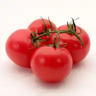
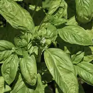

Pizza Garden (Patio)
A culinary bundle - grown together for the kitchen, with no interspecies claim made.
What binds this planting
Chosen for the kitchen. The pizza garden for a pot or sunny windowsill: a bush tomato, basil, and one pepper — all annuals. The cost is the perennial herbs (oregano, thyme, rosemary): they want permanent, unrotated ground and rosemary a mild zone, neither of which a replanted annual pot gives, so they are dropped. Still no interspecies mechanism — same bowl.
Plan this guild →
Space it needs
At least 1 m²10.8 ft². A bed smaller than that does not get this guild quietly substituted for something else — the planner greys it out, says why, and offers the nearest adaptation that does fit.
Adapted from Pizza Garden.
Between seasons
Nothing is left living in the bed over winter; the whole planting is re-established.
What it claims
No interspecies mechanism is claimed. It is grouped for a reason, and that reason is written below rather than dressed up as biology.
What is in it
What it costs the ground
Rotation history attaches to the ground, not the bed, so this is what the planner remembers about this patch after the guild comes out.
A belief this raises
ContestedBasil improves the flavour of adjacent tomatoes.
There's no evidence for this and no mechanism anyone has proposed. Plant basil next to tomatoes anyway — you'll want them at the same time in the kitchen.
what is actually known
No proposed mechanism. No trials. Extremely widely believed.
Rules that gate it
Well establishedAny co-planted set of vegetables is a guild.
This is a claim the planner refuses to enforce — recorded here with what is actually known, rather than dropped.
none if ignored → refute
What is actually known: A guild asserts a mechanism between its members. A culinary bundle asserts only that you will want these things in the same bowl. Both are legitimate. Only one is a polyculture.
Evidence: settled without a trial - definition.
Read the full rule → · open in the planner ↗
All guilds